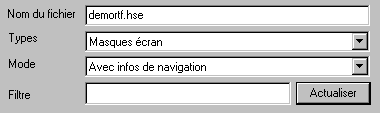

Pour que la navigation soit possible, il faut que les sources soient compilés avec l'option B des compilateurs xDivaCompiler et xFormCompiler.
Cette option est positionnée au niveau du profil.
Lorsque cette option est positionnée, les compilateurs génèrent un fichier .dhbr pour chaque fichier objet. Ces fichiers doivent être en ligne pour utiliser les fonctionnalités de la navigation.
Sauvegarde des masques
Pour que les masques soient utilisables, ils doivent être sauvés avec Mode : Avec infos de navigation.
Pour cela, ouvrez le masque et puis sélectionnez le choix Enregistrer sous du menu Fichier, puis sélectionnez Avec infos de navigation.

Compilation en tâche de fond
Les compilations des masques et des modules se font par des tâches de fond.
Si pendant les compilations, vous ne pouvez plus travailler confortablement dans l'éditeur (lenteur d'affichage, retard lors de la frappe de caractères), vous pouvez baisser la priorité d'exécution des compilateurs.
La priorité d'exécution des compilateurs est définie par le paramètre PrioriteCompilateurs dans le chapitre system du fichier harmony.ini.
Trois valeurs sont possibles :
|
0 |
Priorité normale |
|
-1 |
Priorité moyenne |
|
-2 |
Priorité basse |
Exemple : PrioriteCompilateurs=-1
Voir également :